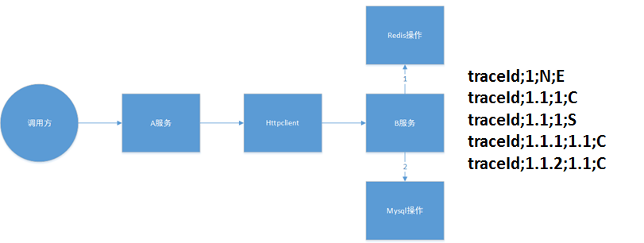
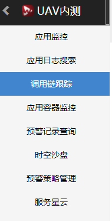
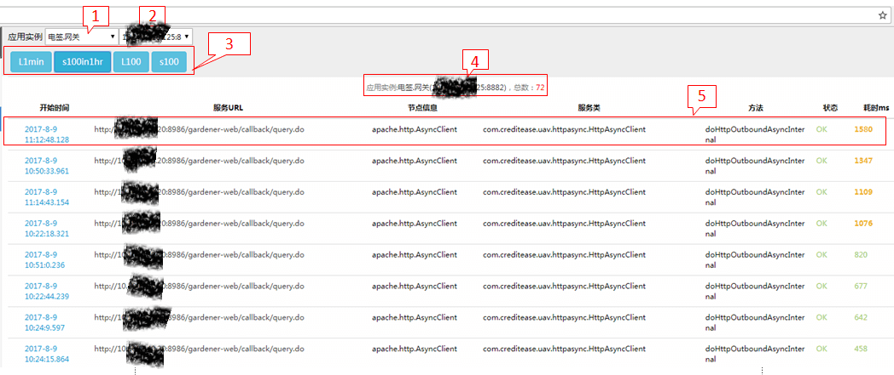
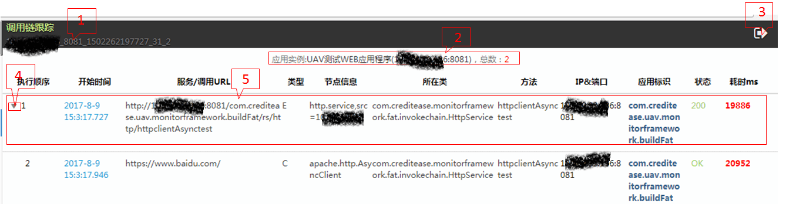
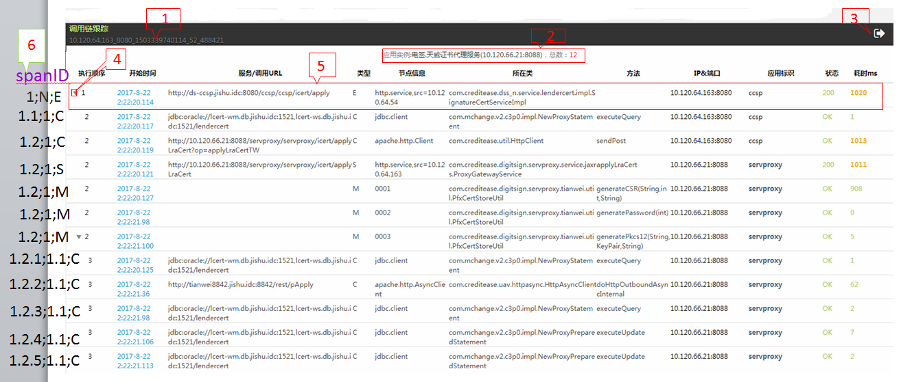
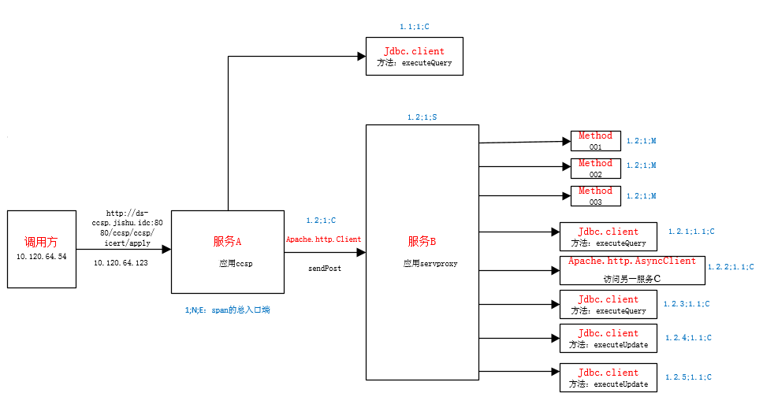
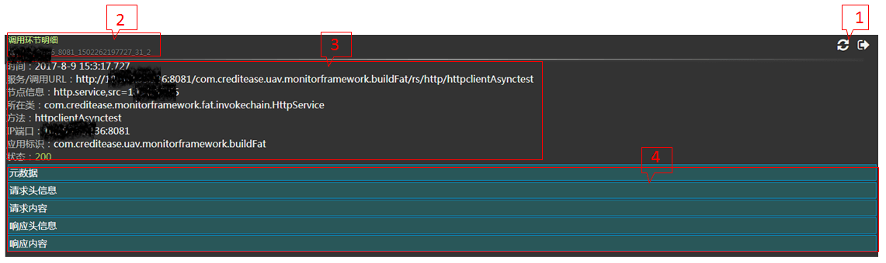

调用链跟踪
调用链模型简介
调用链元数据：
- SpanEndpointType：调用类型（Root(“E”), Service(“S”), Client(“C”), Method(“M”)）；
- traceId：调用链唯一标识符；
- spanId：一条调用链中当前节点的调用顺序（与SpanEndpointType 结合唯一）；
- parentId：一条调用链中当前节点的父调用节点。
调用链绘制规则：
- 调用者（服务、web）最初调用（无父调用）记为开始节点E，并生成唯一调用链ID，traceID；
- 系统内应用组件调用（如httpclient，方法调用等），spanId加末尾数字加1（若为第一个则末尾加.1）；
- 系统间调用（如A服务调用B服务），A服务与B服务span信息只有SpanEndpointType不同（分别对应span的两个端）。 
上帝之眼中选择调用链跟踪

列表视图

1）选择查看不同的应用集群；
2）选择查看同一个应用集群中不同的应用实例；
3）选择查看不同时间的服务请求；
- L1min：查看最近1分钟内的服务请求；
- s100in1hr：查看1小时内最慢100条的服务请求；
- L100：查看24小时内最近100条的服务请求；
- s100：查看24小时内最慢100条的服务请求；
4）显示所选择的应用实例和服务请求的总数；
5）显示服务调用信息，点击查看该次调用请求的调用链详情；
- 开始时间：服务请求开始的时刻；
- 服务URL： 服务的URL地址；
- 节点信息：服务类型+本机IP；
- 服务类：服务所属的类；
- 方法：服务请求的方法；
- 状态：可点击其查看状态
OK表示状态良好； Err表示异常； 数字表示HTTP响应状态码； - 耗时ms：花费在该线程的时间；
调用链详情

1)调用链跟踪:traceID：IP+端口+时间戳+当前线程ID+原子变量；
2)该服务所属应用实例与端口，当前服务总数；
3)返回上一层；
4)归属于同一条服务请求，可收起；
5)：显示本次调用信息，详情如下，点击进入服务调用详情；
- 执行顺序：服务执行的优先级；
- 开始时间：服务请求开始的时刻；
- 服务/调用URL：显示调用是一个服务或者是一个URL；
- 类型：E表示Root：代表Span总入口端；
S表示Service：代表Span的服务端组件； C表示Client：代表Span的客户端组件； M表示Method； - 节点信息：服务类型+本机IP；
- 所在类：服务所属的类；
- 方法：所属服务请求或服务的方法；
- IP&端口：IP号和端口号；
- 应用标识：所属的应用；
- 状态：可点击查看状态；
OK表示状态良好； Err表示异常； 数字表示HTTP响应状态码； - 耗时ms： 花费在该线程的时间；
调用链详情示例：
选择电签.天威代理服务（10.120.66.21:8088）作为示例说明：
6）标识一列spanID；

上述调用链详情流程说明如下：
用户（10.120.64.54）调用服务A(http:/ds-ccsp.jishu.idc:8080/ccsp/ccsp/icert/apply)，访问了应用ccsp，总耗时1020ms；
服务A(ccsp)发起一个jdbc.client访问，执行了executeQuery；
服务A(ccsp)再通过Apache.http.Client发送了sendPost，调用服务B（http:10.120.66.21.8088），访问了应用servproxy；
服务B(servproxy)发起了三个method调用（001、002、003），注意：method实际是service的下一级，但将其作为同一级显示；
服务B(servproxy)再执行了jdbc.client的executeQuery、executeUpdate各两次；
服务B(servproxy)通过apache.http.AsyncClient调用了另一服务C；
服务调用详情

1) 刷新当前页；
2) 调用环节明细；
3) 服务的详细信息；
4) 元数据相关的内容，点击查看详情；
元数据详情

1) 元数据
- spanID: 一条调用链中当前节点的调用顺序；
- Parentid: 一条调用链中当前节点的父调用节点；
2) 请求头信息
3) 请求内容：发起请求的内容，例如图示为：中华人民大团结；
4) 响应头信息
5) 响应内容：响应所请求的内容显示，例如图示为：中华人民大团结；